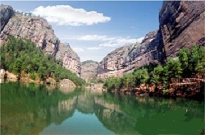
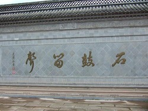
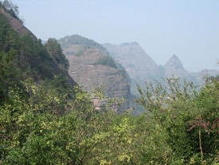
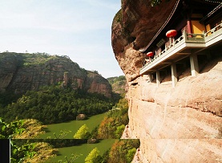
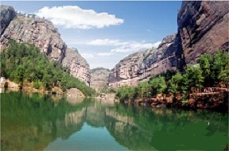
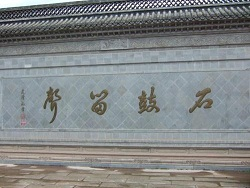
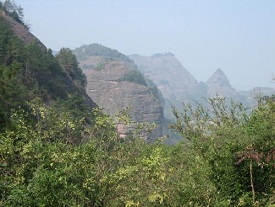
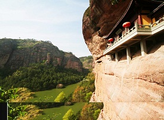
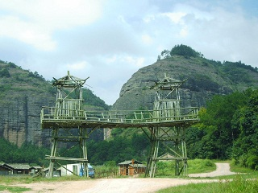
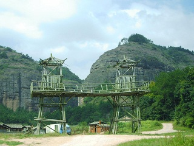

  |
||
  |
||
石鼓寮景区是一个山清水秀、石怪峰奇、极具田园风光的景区，在群山环抱中有一湖绿水、静影沉璧、微波不惊。看，那石鼓、石钟、石笋、石桃向人们展示着五彩缤纷的神话世界。
石鼓寮得名于入口处两侧各自峙立的形状像鼓似钟的石峰，有趣的是石鼓这一边景致的名称都与鼓有关。半空中的岩洞就叫金鼓洞，洞中是用毛竹搭成三四层的金锣寺，而对面也与钟相关，如岩下的声钟亭
等。
石鼓寮的山体为典型的丹霞地貌，平地突兀，陡壁悬崖，因此景点内奇峰、怪石、天然洞穴、瀑、潭、溪、泉、湖一应俱全。整个石鼓寮有前后两坞，两坞的深处各有鸳鸯瀑和龙须瀑。
后坞的半空长廊将景点中最大的岩洞———金鼓洞和另一个岩洞———玄中寺连到了一起。而前坞深处的岩洞里有德清寺，相传始建于北宋时期，南宋吕东莱也在这里修造了东莱书院，明朝礼部尚书黄缙曾与当地的榜眼程文德等到此游览。
原先的千佛寺，因历史原因虽千佛不再，改成了大佛寺，然而岩（寺）中的大佛据说是浙江最大的卧佛。
 
